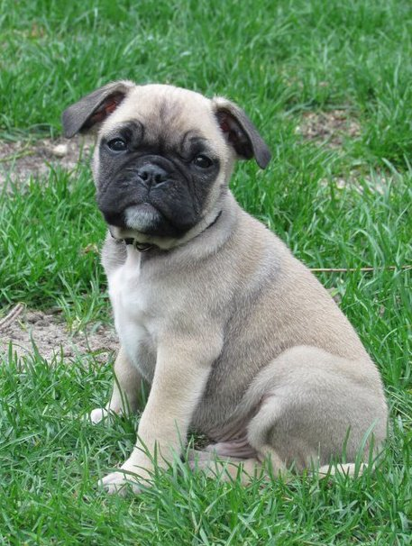
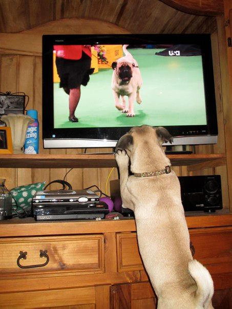
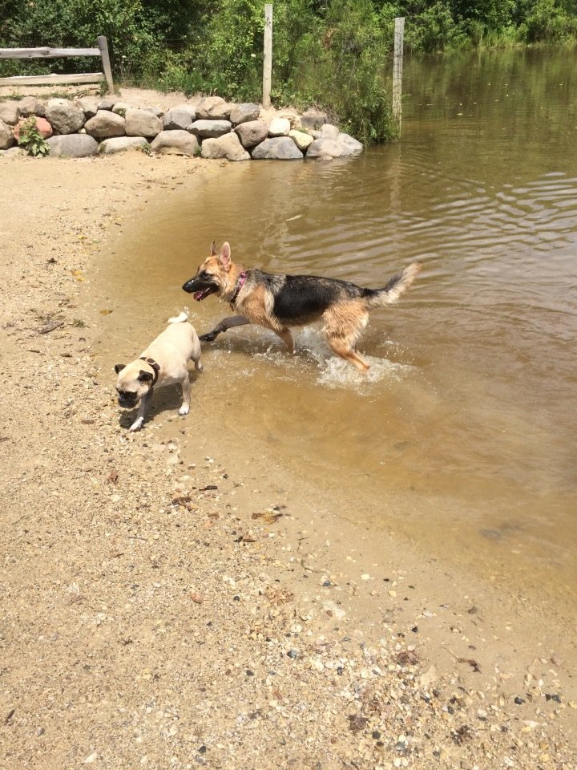

They picked me out of a pile of puppies, a tangled, rolling mass of paws and ears and cuteness, behind a small house near a town in the southern side of Chicago called Oak Lawn. I don’t remember much about where I was born, but I do remember my mother. It seemed that she didn’t really like us; she seemed relieved whenever one of us left. I never knew my father and my owners haven't either. The breeders told my parents that the father hasn’t around but he was one hundred percent pug, but I don’t believe them.
I remember the warmth on the afternoon I left for my new home. My littermates and I were tussling around like we always did, and a hand reached into the pile and suddenly I was dangling high in the air “This one” a man said. “ we were thinking about keeping him” the breeder said. He always said this to get more money. “ will you let him go?” my potential owners said, “ Fur a price” the breeder said.
I am a goofy six year old bulldog/pug Mix but I still remain the alpha dog of the house. I am turning six years old soon so i am slowly but surley getting a tad bit grumpier & older but I can still act like a puppy when wild up. In todays time, I enjoy living a more relaxed and low-key style of life now.
| Likes/Hobbies | Dislikes |
|---|---|
| Sleeping | Being woken up |
| Posing on funiture like a cat | Other Animals on TV |
| BUTTSCRATCHES | Sad voices |
| Snuggling with my owners | Waiting for my owners |
| Swimming in Mud | Wearing winter coats and outfits |
| Running with my sister | JAGGER DAVIS |
Back To Homepage